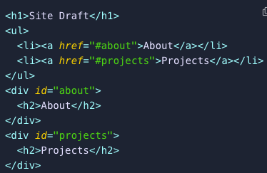
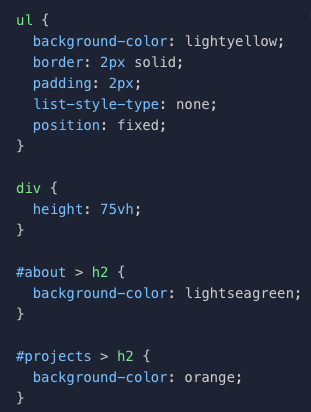
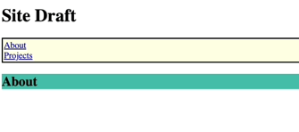
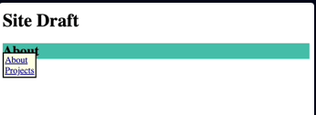
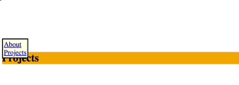

Position: Fixed
- The fixed position works similar to absolute by taking an element out of the normal flow of the page. However, fixed elements stay where they are placed on the screen even when you scroll up and down of the page.
-
This draft HTML:

-
If you want to ensure the ul unordered list element was always on the page no matter where we scrolled on our site:

-
With the position of the ul unordered list element set to fixed, we'd get something like the following:


